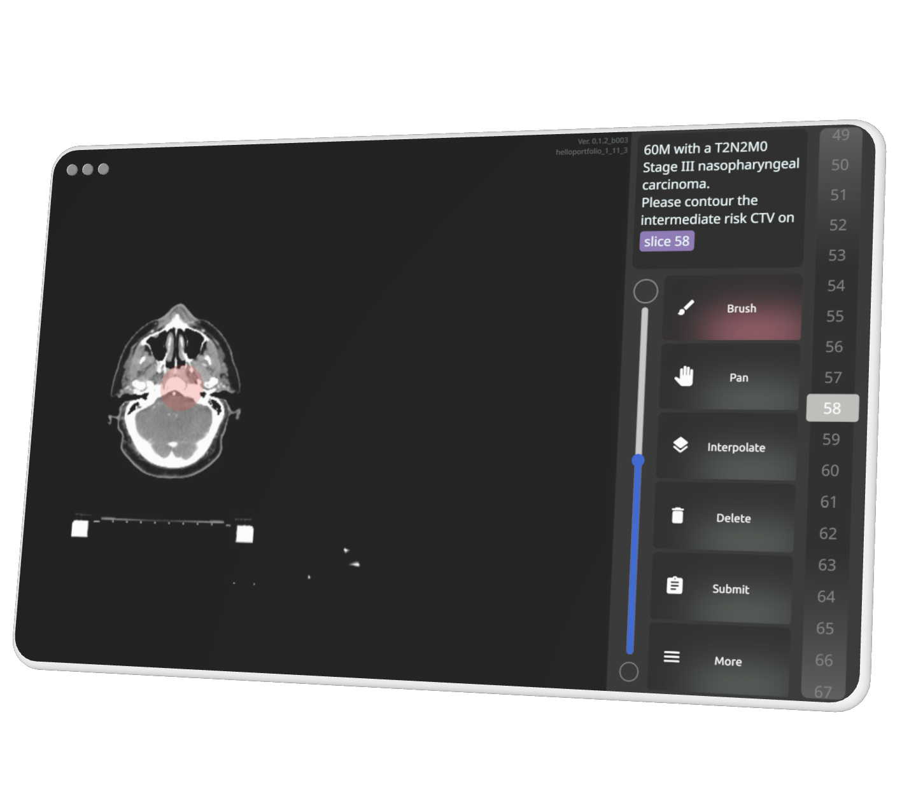

My Works
Selected projects that showcase my expertise in HCI and creative development

U Compass
Your personal reminder device
Obsolete Obsolescence


RetroConnect
Dial from the past, into the future
iContour
A web-based radiologist training with real-time feedback
Proudly with Weibel's Lab @ UC San Diego


UW Medicine Website Redesign
HCDE Capstone Project, real client, real design
OKAPI Reusables Redesign
Fostering Inclusivity in Sustainable Services